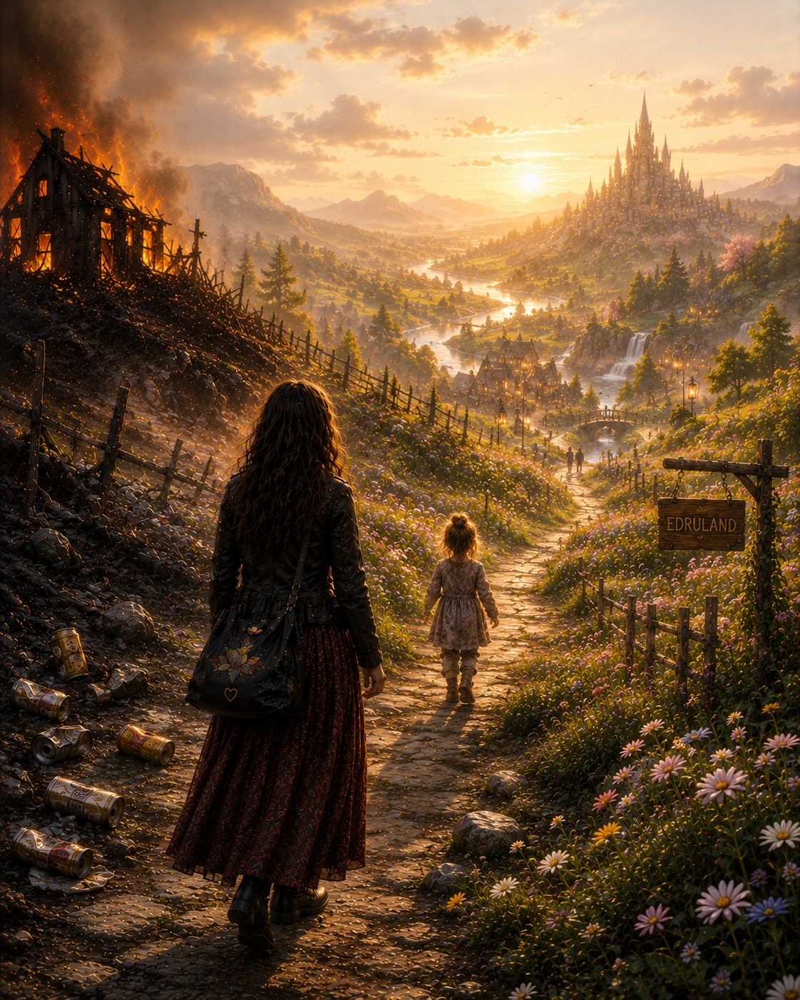

Kognitiv dissonans
Jeg visste det første gang jeg møtte ham at han var farlig for meg.
Likevel klarte jeg ikke la være.
Som at jeg var kald inn til beinet, og han var et fristende varmt bål jeg kunne varme meg på.
Men det var verre enn det.
Det var som å gå inn i et brennende hus for å holde varmen.
Jeg var i aktiv rus. Han var i aktiv rus. Det var vel de eneste likhetene vi hadde.
Han behandlet meg verre og verre for hver gang jeg tillot ham å gå over grensene mine.
Likevel ble jeg værende.
Jeg klarte å slutte å drikke. Jeg klarte å gå fra ham. Jeg klarte å finne den bittelille styrken og stemmen jeg hadde igjen før jeg brant inne og gikk til grunne.
Så hvordan forsvarer jeg at jeg fortsatt tenker på ham? Hvordan kan jeg lengte etter en som skadet meg?
Det faller jo på sin egen urimelighet.
Nei, det var ikke kjærlighet. Det var en farlig og skadelig relasjon. Jeg vet det. Jeg skjønner det.
Men den lille jenta inni meg, barnet i meg som lærte at kjærlighet er noe man må jobbe for, at man må gå på nåler og tilpasse seg, at hvis bare man blir bedre, tåler mer, tilpasser seg litt mer — da kommer kanskje kjærligheten. Da kommer lindringen. Da kommer roen.
Den lille jenta skjønner ikke dette.
Og henne bærer jeg med meg hver eneste dag.
Tankene hennes er så tatovert inn i sjela mi at den voksne, fornuftige delen av meg blir helt utslitt av å diskutere med henne. Forklare henne igjen og igjen at hun fortjener bedre. At hun fortjener trygghet. At hun fortjener ro. At hun ikke skal gjøre seg selv til en dørmatte for andre mennesker å tørke skoene sine på.
Den kampen er utmattende.
Det er utmattende å måtte minne meg selv på sannheten igjen og igjen.
Det føles som å løpe et maraton. Ikke bare psykisk, men fysisk også. Som om kroppen min fortsatt ikke forstår at det som føltes intenst ikke nødvendigvis var kjærlighet.
For jeg savner ikke samtalene. Jeg savner ikke tryggheten. Jeg savner ikke latteren eller følelsen av å bli sett dypt og rolig.
For det fikk jeg egentlig aldri.
Jeg savner lindringen. Intensiteten. Håpet. Fantasien. Følelsen av å slippe å være alene med meg selv et øyeblikk.
Det er vondt å innse.
Men også frigjørende.
For da handler ikke dette om at jeg mistet «mannen i mitt liv».
Det handler om at jeg står i abstinensen etter et destruktivt mønster samtidig som jeg lærer å bli i meg selv uten å flykte.
Det handler om at jeg ser det nå.
Det er edring det også. Ikke bare fra alkohol — men fra det som bryter meg ned.
Og det gjør meg så fordømt utålmodig.
Er det sånn jeg er? Kan det ikke bare gå over? Kan ikke denne indre konflikten stoppe snart?
Denne indre rettssaken der jeg er både aktor og forsvarer, og dømmer meg selv hardere enn noen annen dommer noensinne ville gjort.
Og det er da jeg må bruke den delen i meg som vet bedre. Forsvareren i meg. Kunnskapen jeg har funnet trøst i.
Annie Grace skriver om «kognitiv dissonans» — den mentale mismatchen som oppstår når handlingene dine ikke lenger stemmer overens med det du egentlig vet er sant.
Hun skriver:
«Jeg kunne ikke finne en eneste del av opplevelsen av å drikke som var verdt det den kostet meg. Ikke angsten, ikke skyldfølelsen, ikke de vonde morgenene.
Da jeg endelig så det — da jeg innså at drikkingen min ikke ga meg noe som oppveide konsekvensene — sluttet jeg å kjempe mot meg selv.
Og det er hva kognitiv dissonans egentlig er — en invitasjon til å innrette handlingene dine etter sannheten din.»
Det fikk meg til å tenke på det jeg delte på et møte.
Om den morgenen for mange år siden da jeg lurte med meg to øl gjennom selvbetjeningskassa uten å betale for dem, fordi ølsalget ikke hadde åpnet ennå.
Jeg hadde aldri trodd at jeg kunne bli et sånt menneske.
Et menneske som ikke klarte å vente tjue minutter.
Men der sto jeg. Og følte meg som søppel.
Jeg har aldri sagt det høyt før. Og det fyller meg fortsatt med skam.
For det var en handling som ikke samsvarte med verdiene mine.
Likevel gjorde jeg det.
Jeg stjal for å døyve fylleangsten.
Det er helt sinnsykt å tenke tilbake på nå.
Men det var også den morgenen jeg sluttet å drikke og holdt meg unna i fire år.
For den morgenen var det noe inni meg som våknet igjen. En liten stemme. En liten styrke som sa:
Dette er ikke et liv. Det er en eksistens. En limbotilstand.
Jeg måtte kanskje helt ned dit for å stoppe.
Akkurat som jeg måtte miste nesten alt jeg hadde av selvrespekt for å forstå hvor ødeleggende det forholdet var.
Nå er jeg snart syv måneder edru.
Ja, jeg sprakk etter fire år. Det skal jeg skrive om en annen dag, når jeg føler meg litt sterkere.
For i dag får det holde å minne meg selv på hvor skjørt dette er.
At jeg fortsatt må velge.
Hver eneste dag.
